{kind=link}
Shape each day, keep bookings visible and build a live itinerary for the trip.
Now in private TestFlight
Version 2.0 · September update
Your whole trip, calmly organised.
A cinematic trip canvas for the itinerary, packing, payments, paperwork and people that make travel happen—with one honest view of what needs attention next.
Planned App Store price: £3.99, paid once. No subscription. TestFlight remains free during testing; public release is still being prepared.
Unlimited local tripsNo account requirediPhone · iOS 18+
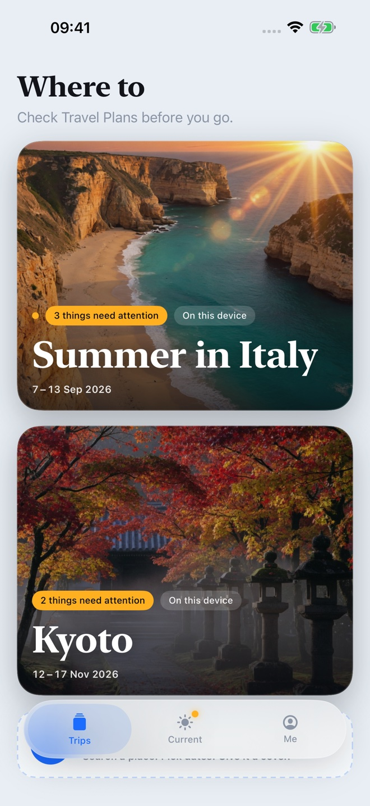
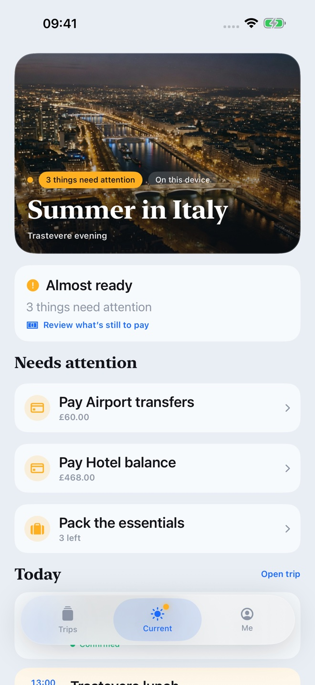
The new 2.0 experience
Real screens. The design you know.
Trips, Current and Me keep the top level simple. Open a trip and the whole plan stays on one visual canvas, with focused sheets for the details.
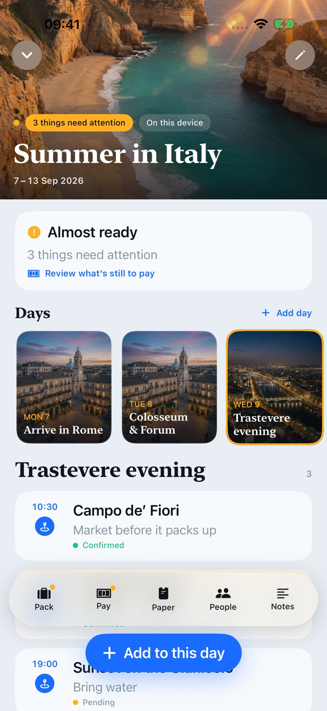
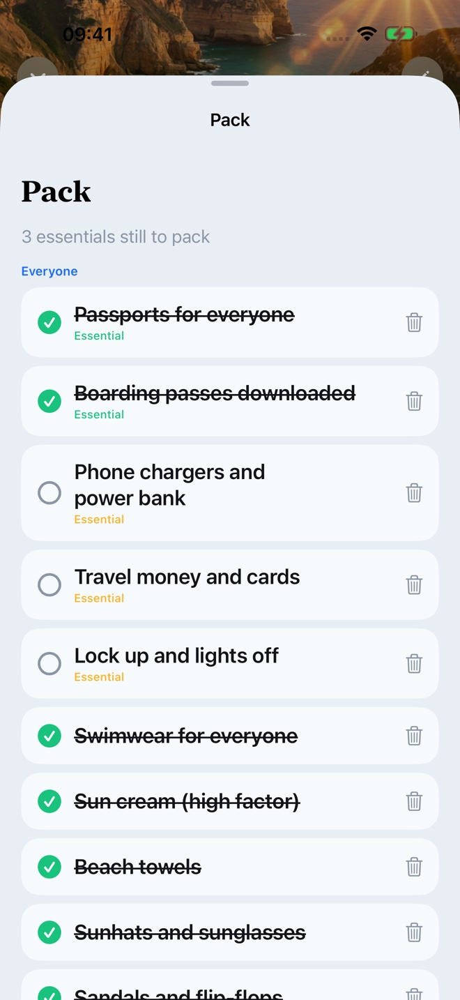
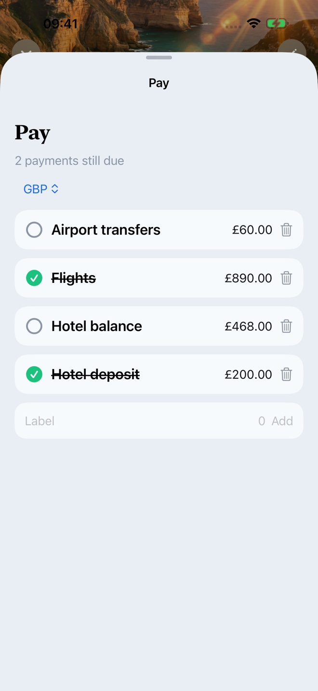
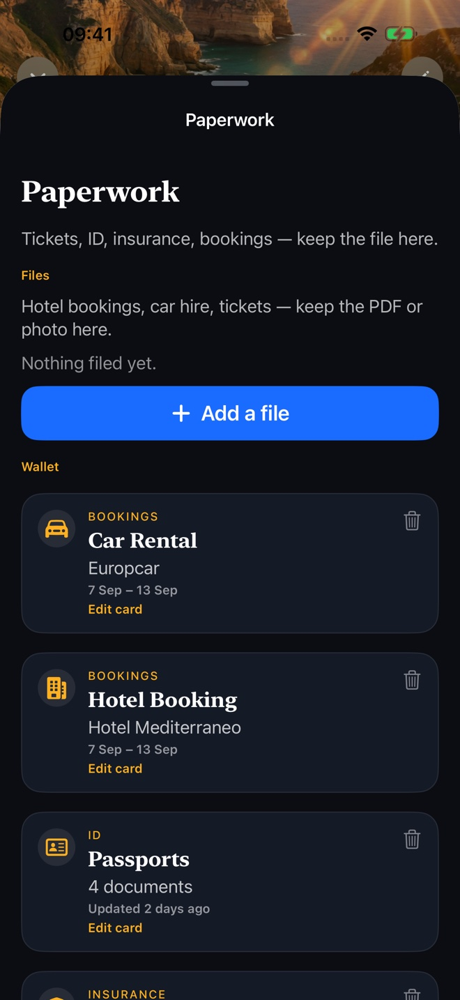
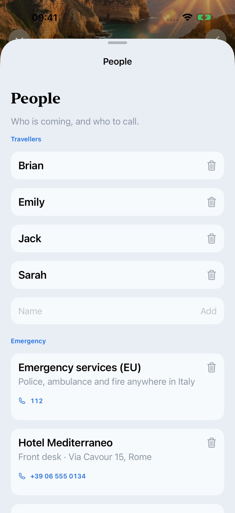
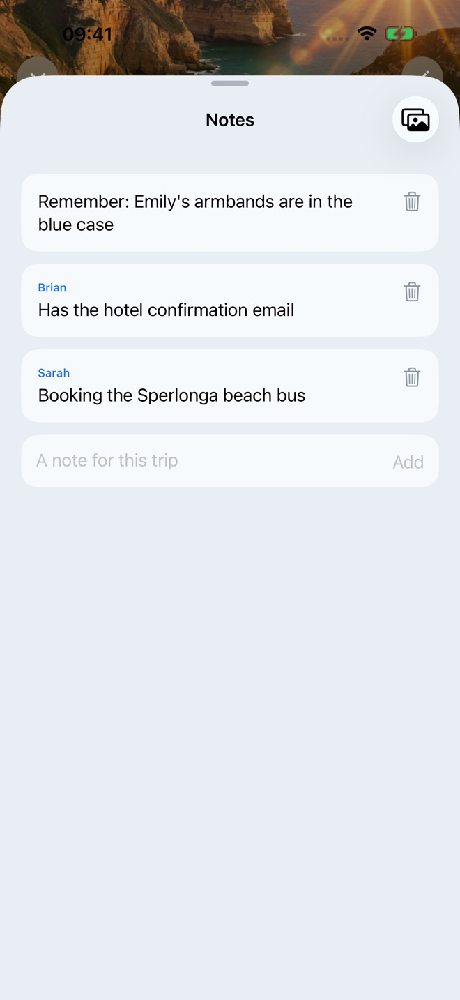
The next TestFlight update
Find a stop. Make the day yours.
The September discovery update keeps the design you know and adds visual activity categories, Apple Maps place lookups and useful planning prompts. Press and hold a day—or use Day options—to remove it with confirmation. Later days move forward and the trip end date adjusts.
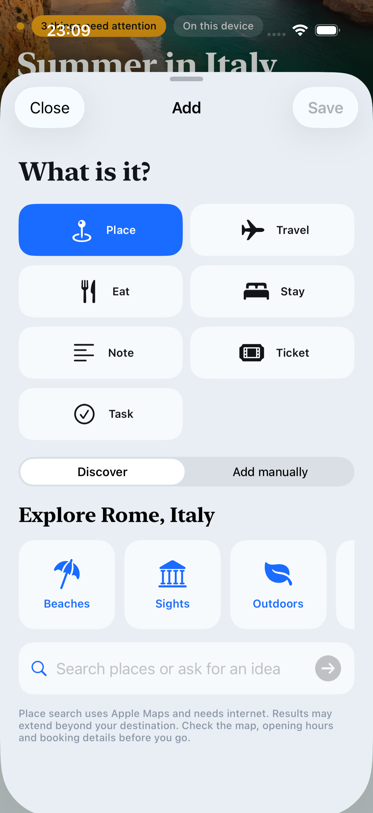
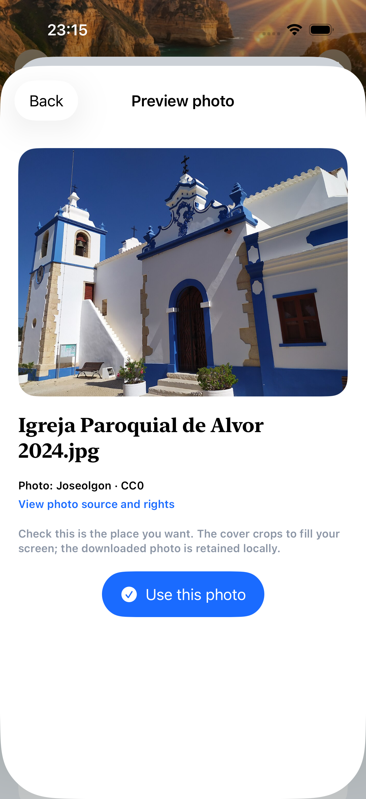
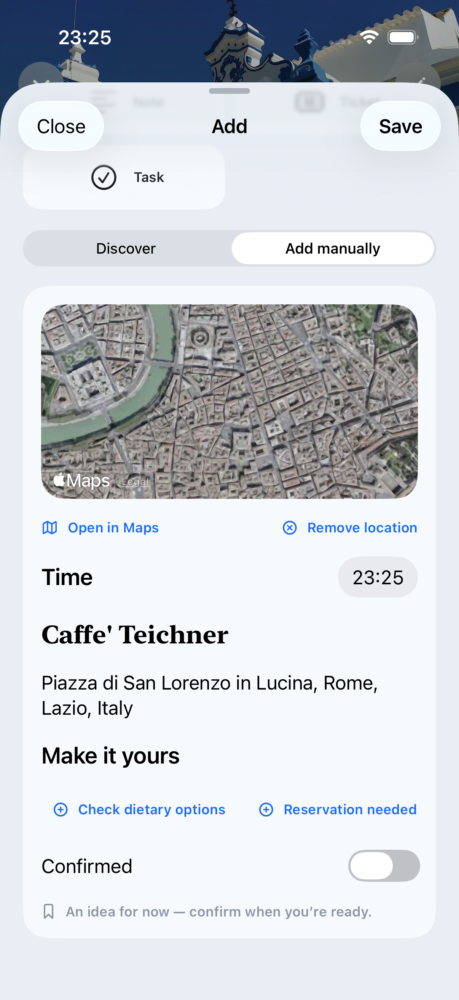
Real development-build screenshots with example data. Search needs internet and coverage varies; check places and photo rights before use. No generative AI or extra subscription. Availability depends on your installed TestFlight build.
Plan, Pack, Pay, Paperwork, People
Built around what families actually need to finish.
Make practical lists, mark essentials and see what still needs to go in the bag.
Track paid items and outstanding balances. Choose the trip currency and edit amounts and due dates. No currency conversion or payment processing.
Attach booking PDFs, photos and tickets. Add expiry dates to wallet cards and spot documents that need attention before you travel.
Keep traveller details, emergency contacts and useful notes together.
Get a calm status and a useful next action—never a misleading percentage.
Local-first by design
Your plans stay yours.
Version 2.0 supports unlimited trips stored privately on your iPhone. There is no Travel Plans account, advertising profile or analytics SDK.
Privacy at a glance
- Trip facts are stored on this device
- No account or Sign in with Apple required
- No advertising or analytics SDK
- Optional iCloud Drive is only for booking files
- Complete trip backups include attachments and restore as new copies
- Keep backups secure: they may include private documents
- Database recovery preserves files instead of deleting them
One active travel planner
Let’s Build Travel Plans.
This is our active, private, local-first iPhone planner. The older Travel Plans and Family Trips beta apps retired on 9 September 2026. Their existing data is not automatically moved into this app.
Feel ready before travel day.
Travel Plans 2.0 is now in private TestFlight. Request access to test the app. We review requests before inviting testers.